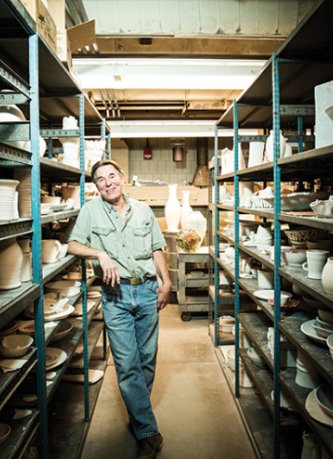
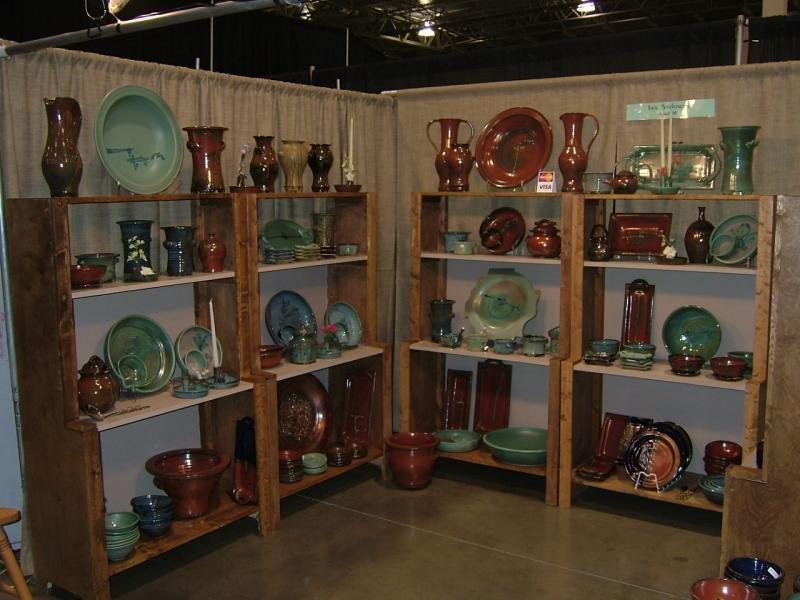
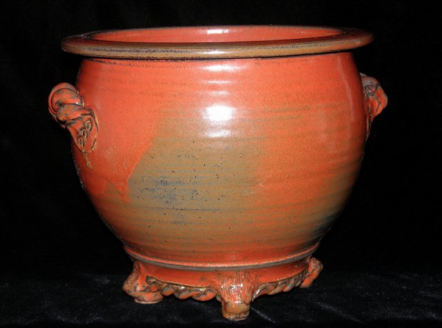
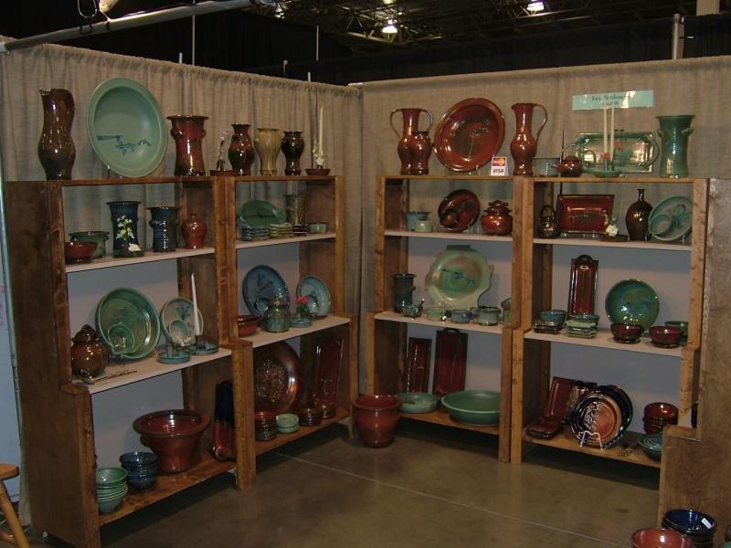
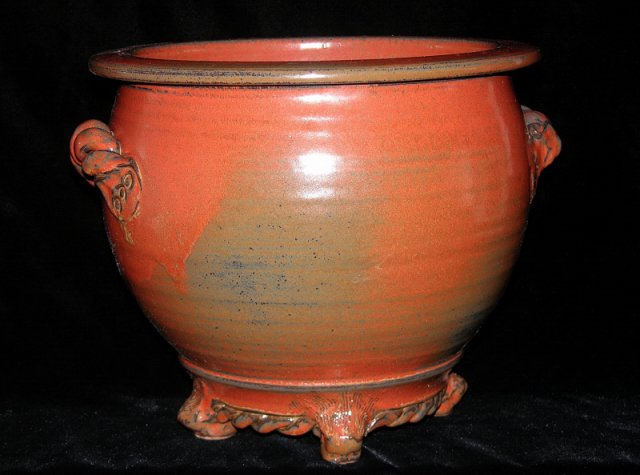

Terrestrial Forms /
Jan Sadowski Pottery
Functional stoneware · Clay supply · Kiln service
Howell, Michigan
Since 1968
(734) 878-0541

Functional stoneware · Clay supply · Kiln service
The Work
A full line of high-fired stoneware — made to be used as well as admired. Every piece is dishwasher safe, microwave safe, and lead-free.
Stoneware jars and planters with rich copper-amber glazes and sculptural detail.
Dinner plates, pie plates (11" wide), and chargers for everyday use and special occasions.
Generous pitchers and serving bowls. Silver-copper glazes with carved abstract linear decoration.
Large platters, 18 to 20 inches, and serving trays. Built to last — some in daily use for 50+ years.
Gallery

 




Clay & Materials
Standard brand clays, raw materials, and chemicals for making glazes. Serving potters, schools, and studios across Michigan.
Equipment
Sales and service for electric kilns.
Sales and service. A reliable, American-made kiln line popular with studios and schools.
Sales and service. Known for durability and even firing across a range of sizes.
Element replacement, controller repair, and general kiln maintenance. Call to schedule.
About
Jan Sadowski has been making pottery since the 1960s, when he took an art class from George Landino at Groves High School in Birmingham, Michigan. "He had this incredible, inspiring class," Sadowski recalls. "The class just clicked. Everyone went on to be a professional."
Landino introduced Sadowski to renowned potter John Glick of Farmington Hills. Sadowski worked alongside Glick for four years while attending Wayne State University studying art.
"Jan Sadowski came as a high school student, very advanced in potting, with a lot of personal ambition. He worked with me after school and on weekends. My intent with Jan was to teach him studio throwing so that I could have a certain amount of production from his output, along the lines of the Leach pottery in England. In two or three months he was able to reproduce my more simple shapes with excellent results, and I began to pay him for piecework. … He had an unusually long stay, and I think what held us together was mutual respect and a need being fulfilled at both ends." — John Glick, "Studio Management (Part Two)"
After graduation, he joined the Birmingham Bloomfield Art Association, eventually becoming artist in residence and head of the ceramics department — a position he held for more than 20 years.
Now working from his home studio in Howell, Sadowski sells his functional stoneware at a few select art fairs in Michigan and teaches pottery at Oakland Community College in Royal Oak.
"If I go to somebody's home where they use mass-produced dinnerware, it doesn't feel comfortable. There's a familiarity, a connection, to a hand-crafted piece. You get attuned to it."
Get in Touch
Please call or text before coming. The studio is at the home — scheduling a time ensures Jan is available and ready for you.
Common carrier for large orders. Own truck available for deliveries up to 12,000 lbs. Small orders ship USPS. Call for shipping quotes.